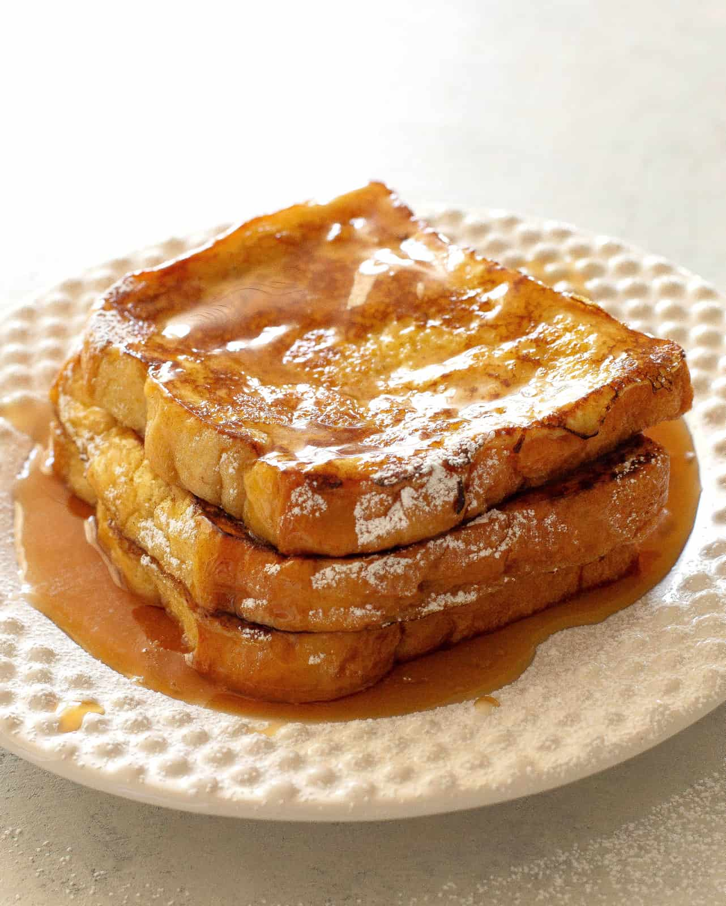

Odin Recipes
French Toast
An easy, delicous,french toast recipe! Few ingredients and made in less than 30 minutes.

Ingredients
- 6 slices white bread
- 2 large eggs
- 2/3 cup milk
- 1 teaspoon vanilla extract
- 1/4 teaspoon cinnamon
- Salt to taste
- 1 tablespoon unsalted butter
Steps
- Whisk milk, eggs, vanilla, cinnamon, and salt together in a bowl.
- Lightly butter a griddle or skillet and heat over medium-high heat.
- Dunk bread in the egg mixture, soaking both sides.
- Transfer to the hot skillet and cook until golden. 3-4 minutes per side.
- Optional toppings: syrup, nutella, jam, or your favorite fruit.